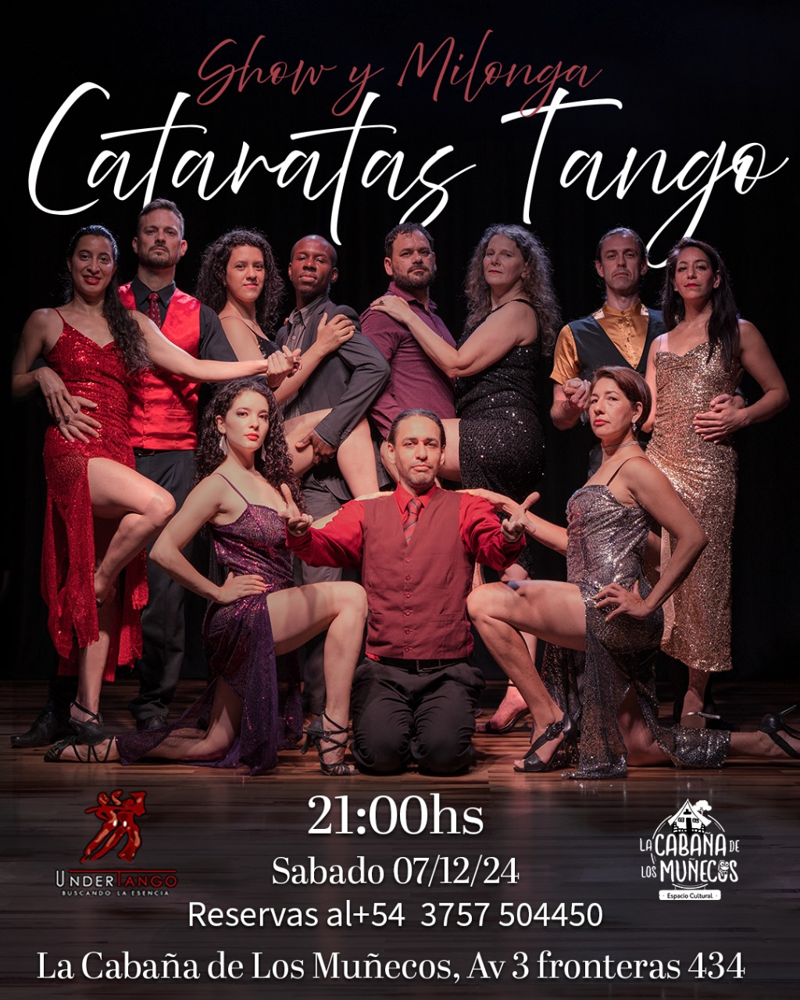

Un Show Inolvidable
Hoy, 07/12/2024, se realizó el show de cierre del taller de los alumnos que estuvieron 6 meses aprendiendo. En este evento debutaron con su primer show de tango escenario, demostrando las habilidades que adquirieron durante el taller.

Entrevista Especial
Escucha la entrevista realizada en Radio Provincia de Misiones LT17 en el programa "Cultura en Movimiento":